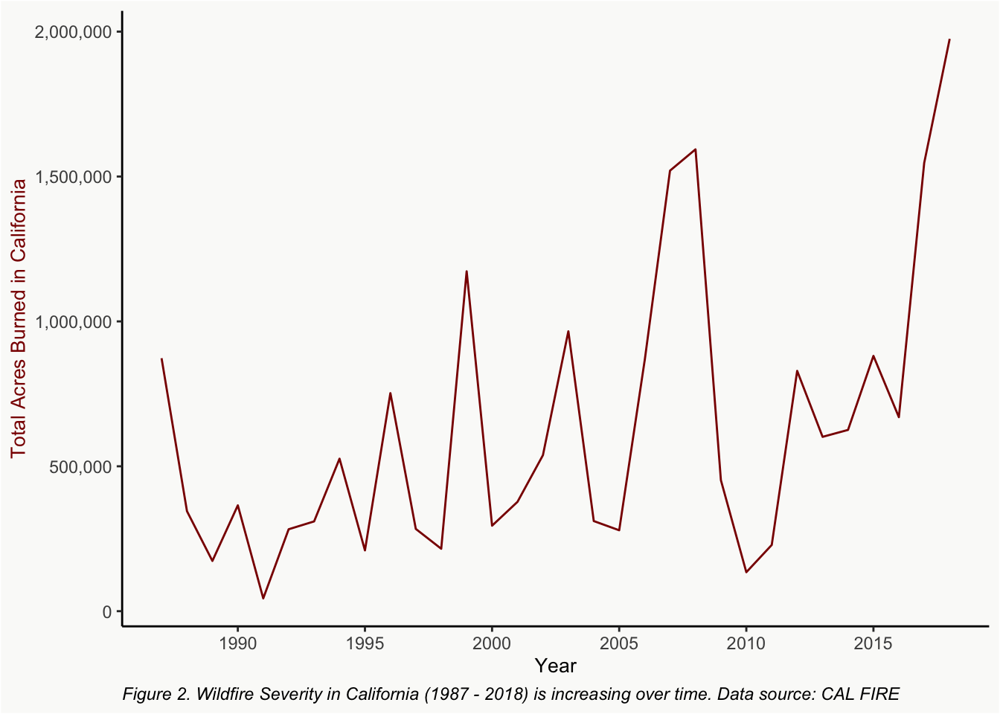
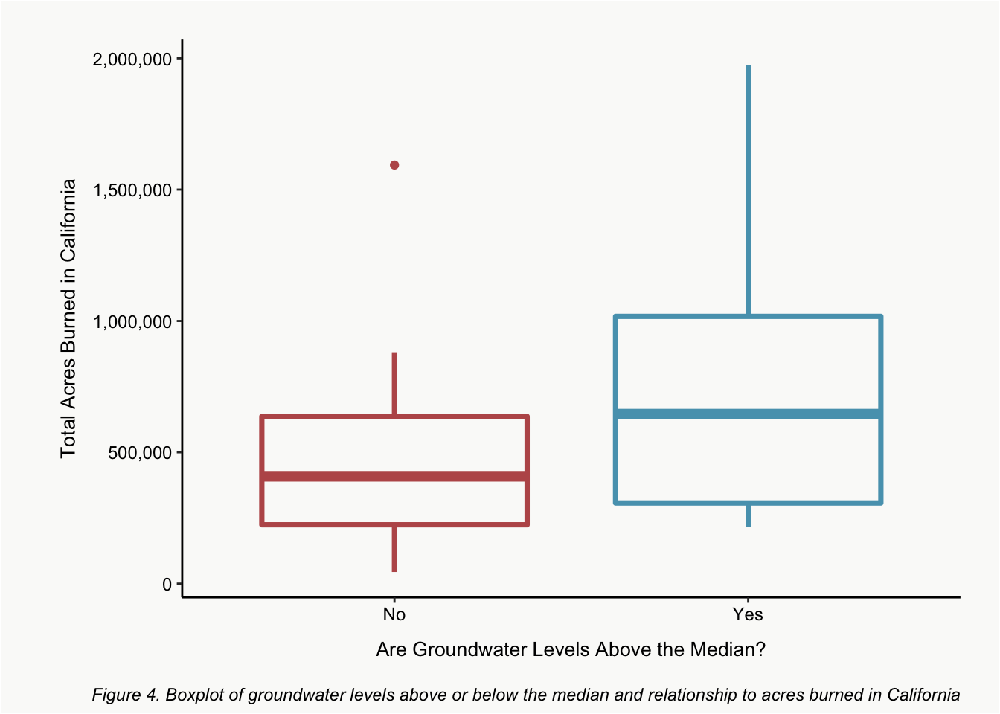
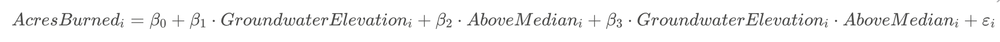

While there are extensive studies on how wildfires affect groundwater quality, there is minimal research on how groundwater availability influences wildfire severity (Paul et al. 2022). Specifically, this analysis has never been done in California where we are facing increasingly low groundwater levels due to over pumping and drought (Pauloo et al. 2020). After exploring CAL FIRE’s data, I found that from 1987 - 2018 the number of wildfires in Caifornia has been decreasing over time (Figure 1), however the intensity of fires has been increasing (Figure 2). Based on groundwater and plant interaction research, we know that there are ecosystems that are dependent on groundwater to survive (Meyers et al. 2021). My question is then – if groundwater levels are lower than usual due to over pumping and drought is this having an affect on the intensity of wildfires in California due to drier vegetation conditions?
View Code
#plotting fire occurences 1987 - 2018ggplot() +geom_line(data = ca_wildfire,aes(x = year,y = total_fires)) +scale_x_continuous(breaks = scales::pretty_breaks(n =12), name ="Year") +scale_y_continuous(labels = comma, name ="Total Fires in California") +theme_classic() +labs(caption ='Figure 1. Wildfire Occurences in California (1987 - 2018) are decreasing over time. Data source: CAL FIRE') +theme(panel.background =element_rect(fill ="#FAFAF9"),plot.background =element_rect(fill ="#FAFAF9"),plot.caption =element_text(hjust =0, face ="italic"),axis.title=element_text(size=10))
View Code
#plotting total acres burned from 1987 - 2018ggplot() +geom_line(data = ca_wildfire,aes(x = year,y = total_acres_burned),col ="darkred") +scale_x_continuous(breaks = scales::pretty_breaks(n =12), name ="Year") +scale_y_continuous(labels = comma, name ="Total Acres Burned in California") +theme_classic() +labs(caption ='Figure 2. Wildfire Severity in California (1987 - 2018) is increasing over time. Data source: CAL FIRE') +theme(axis.title.y =element_text(color ="darkred"),panel.background =element_rect(fill ="#FAFAF9"),plot.background =element_rect(fill ="#FAFAF9"),plot.caption =element_text(hjust =0, face ="italic"),axis.title=element_text(size=10))

View Code
# grid.arrange(fire, fire_acre)
Data
CAL FIRE - Wildland Fires & Acres - All Jurisdictions (1987 - 2018)
For the fire data used in my analysis, I used CAL FIRE’s Wildland Fires & Acres - All Jurisdictions (1987-2018) data. This data tells us the total number of fires and total acres burned in California across all jurisdictions. A limitation to this data is that it is in .pdf format so I had to manually input values into an excel spreadsheet. This could lead to human error in the transfer process.
California DWR - Periodic Groundwater Level Measurements
For groundwater level data, I used the California Department of Water Resource’s periodic groundwater level measurement data. This data did not come with a data dictionary, so it was difficult to determine what each column name was abbreviated for in the data set. Luckily, I have a background in groundwater and was able to identify that the ‘gwe’ column stood for groundwater elevation.
Analysis
To begin my analysis of groundwater levels, I checked the distribution of groundwater elevation in California to determine if I should summarize each year’s data by the median or mean. My data ended up being heavily skewed right so I decided to summarize groundwater elevation levels by the median value for each year.
View Code
ggplot() +geom_histogram(data = gw_levels,aes(x = gwe),fill ='#58A1BB',col ="#FAFAF9") +scale_x_continuous(limits =c(-500,6000)) +scale_y_continuous(expand =c(0,0)) +theme_classic() +labs(x ="Groundwater Elevation (ft)",y ="Number of Groundwater Wells",caption ='Figure 3. Distribution of groundwater elevation for wells in California are strongly skewed right') +theme(panel.background =element_rect(fill ="#FAFAF9"),plot.background =element_rect(fill ="#FAFAF9"),plot.caption =element_text(hjust =0, face ="italic"),axis.title=element_text(size=10))
View Code
#Create year column and find median groundwater elevation for each yeargw_levels_year <- gw_levels_current %>%mutate(year = lubridate::year(msmt_date)) %>%group_by(year) %>%summarize(median_gwe =median(gwe, na.rm =TRUE))
Boxplot
View Code
knitr::opts_chunk$set(fig.width=12, fig.height=8) gwe_median <-median(gw_levels_year$median_gwe)gw_levels_year$above_median <-ifelse(gw_levels_year$median_gwe < gwe_median, "No", "Yes")boxplot_fig <-ggplot() +geom_boxplot(data = ca_wildfire,aes(x = gw_levels_year$above_median,y = total_acres_burned),col =c("#BB5858", "#58A1BB"),lwd =1.25,fill ="#FAFAF9") +scale_y_continuous(labels = comma, name ="Total Acres Burned in California") +scale_x_discrete(name ="Are Groundwater Levels Above the Median?") +labs(caption ='Figure 4. Boxplot of groundwater levels above or below the median and relationship to acres burned in California') +theme_classic() +theme(axis.text =element_text(color="black", size=9),axis.title.x =element_text(color="black", size=10, vjust =-2),axis.title.y =element_text(color="black", size=10, vjust =3),plot.margin =margin(20, 20, 20, 35),panel.background =element_rect(fill ="#FAFAF9"),plot.background =element_rect(fill ="#FAFAF9"),plot.caption =element_text(hjust =1, face ="italic", vjust =-7))boxplot_fig

Interaction model

View Code
int_data <-full_join(gw_levels_year, ca_wildfire)int_model <-lm(total_acres_burned ~ median_gwe + above_median + median_gwe:above_median, data = int_data) dust(int_model) %>%sprinkle(col =2:4, round =3) %>%sprinkle(col =5, fn =quote(pvalString (value))) %>%sprinkle_colnames(term ="Term",estimate ="Estimate",std.error ="SE", statistic ="T-statistic",p.value ="P-value") %>%kable(caption ="Tbl 1. Results of interaction model between area burned and groundwater elevation") %>%kable_styling()
Tbl 1. Results of interaction model between area burned and groundwater elevation
Term
Estimate
SE
T-statistic
P-value
(Intercept)
689309.264
473019.813
1.457
0.16
median_gwe
-1777.316
4208.917
-0.422
0.68
above_medianYes
-560393.472
582755.853
-0.962
0.34
median_gwe:above_medianYes
4606.717
4440.821
1.037
0.31
With p-values all greater than 0.05 the below statements are all considered not statistically significant.
Intercept: We predict that average acres burned for years when groundwater levels are below the median at zero is 689,309 acres
Coefficient on Groundwater Elevation: When groundwater levels are below the median, area burned decreases by 1,777 acres.
Coefficient estimate on the above median groundwater levels indicator variable (above_medianYes): On average, area burned is 560,393 acres lower for years when groundwater elevation is higher than the median when groundwater levels are zero.
Coefficient on median_gwe:above_medianYes: The impact of groundwater levels on area burned is 4,606 acres higher when groundwater levels are higher than the median compared to when groundwater levels are below the median.
View Code
int_data %>%ggplot(aes(x = median_gwe, y = total_acres_burned, color = above_median)) +geom_point() +geom_line(data =augment(int_model), aes(y = .fitted, color = above_median),lwd =1.25) +scale_y_continuous(labels = comma, name ="Total Acres Burned in California") +scale_x_continuous(name ="Median Groundwater Elevation (1987 - 2018)") +theme_few() +labs(color ="") +theme(legend.position="top") +labs(caption ='Figure 5. Interaction model between acres burned, groundwater elevation and above median groundwater levels or not') +scale_colour_manual(labels =c("Lower Groundwater Levels than Usual", "Higher Groundwater Levels than Usual"),values =c("#BB5858", "#58A1BB")) +theme(axis.text =element_text(color="black", size=15),axis.title.x =element_text(color="black", size=18, vjust =-2),axis.title.y =element_text(color="black", size=18, vjust =3),plot.margin =margin(20, 20, 20, 35),legend.text =element_text(size =15),legend.key.size =unit(1, 'cm'),panel.background =element_rect(fill ="#FAFAF9"),plot.background =element_rect(fill ="#FAFAF9"),legend.key =element_rect(fill ="#FAFAF9"),legend.background =element_rect(fill ="#FAFAF9"),plot.caption =element_text(hjust =0,face ="italic", vjust =-7, size =11.75))
I began this analysis believing that lower groundwater elevation would result in an increase of acres burned in California. However, based on my box plot results (Figure 3) and my interaction model (Figure 4), I found that as groundwater elevation increases, there are more acres burned in California. With a correlation coefficient value of 0.41, there is a medium correlation between groundwater levels and total acres burned in California.
Future Analysis
The results of my analysis do not intuitively make sense to me because there should be less fuel for fire if plants have adequate hydration from groundwater. I believe further analysis is needed in order to come to a more reasonable conclusion on this topic. Due to limitations on the time frame of this project and the data used, I was only able to perform a generalized analysis across the entire state of California. To achieve more conclusive results it would be beneficial to look at specific California regions to see if there is a correlation between groundwater and wildfire severity. There is also spatial data available for California that could be used in spatial statistical analysis across the state to find if there is a relationship between groundwater and wildfire severity. Additional analysis could be conducted across other US states and compared to California’s results.
References
Meyers, Zachary P, Marty D Frisbee, Laura K Rademacher, and Noah S Stewart-Maddox. 2021. “Old Groundwater Buffers the Effects of a Major Drought in Groundwater-Dependent Ecosystems of the Eastern Sierra Nevada (CA).”Environmental Research Letters 16 (4): 044044. https://doi.org/10.1088/1748-9326/abde5f.
Paul, M. J., S. D. LeDuc, M. G. Lassiter, L. C. Moorhead, P. D. Noyes, and S. G. Leibowitz. 2022. “Wildfire Induces Changes in Receiving Waters: A Review With Considerations for Water Quality Management.”Water Resources Research 58 (9). https://doi.org/10.1029/2021wr030699.
Pauloo, R A, A Escriva-Bou, H Dahlke, A Fencl, H Guillon, and G E Fogg. 2020. “Domestic Well Vulnerability to Drought Duration and Unsustainable Groundwater Management in California’s Central Valley.”Environmental Research Letters 15 (4): 044010. https://doi.org/10.1088/1748-9326/ab6f10.
![]()